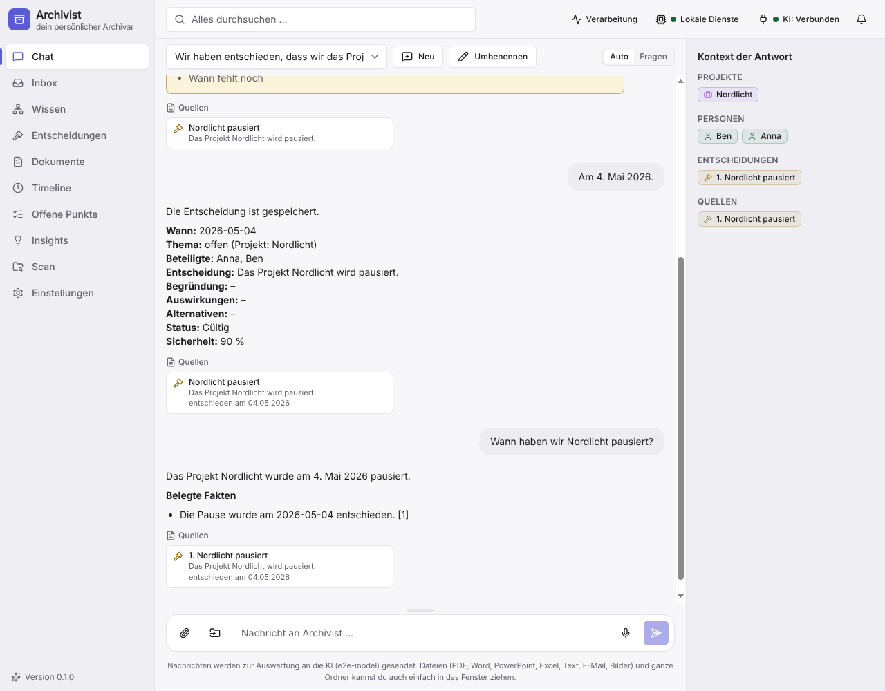
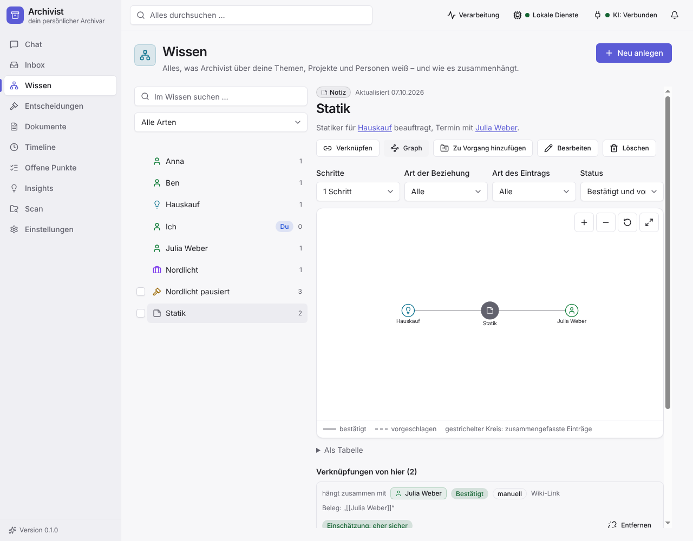

Chat als Schnittstelle
Halte Entscheidungen fest, stelle Fragen und bekomme Antworten mit Quellen – belegte Fakten getrennt von Interpretation.
Eine lokale Desktop-Anwendung für Windows, die deine Dokumente, Entscheidungen, offenen Punkte und dein Wissen nicht nur speichert, sondern versteht, verknüpft und das Archiv aktiv konsistent hält.
Für Windows herunterladen Erste Schritte

Halte Entscheidungen fest, stelle Fragen und bekomme Antworten mit Quellen – belegte Fakten getrennt von Interpretation.
Dokumente landen in menschenlesbaren Ordnern. Nichts wird überschrieben, Gelöschtes landet im Papierkorb, jede Änderung lässt sich rückgängig machen.
Themen, Projekte, Personen und Dokumente sind verknüpft und auffindbar. Archivist schlägt Verknüpfungen mit Begründung vor – du entscheidest.
Plant mehrere Schritte, nutzt Werkzeuge und prüft das Archiv auf Lücken, Dubletten und Widersprüche.

Ein Archiv ist persönlich. Deshalb sind die Schutzregeln keine Einstellung, sondern fest eingebaut.
Das Tutorial Erste Schritte führt dich in etwa 15 Minuten durch alles.
Geordnet nach dem, was du gerade brauchst (Diátaxis).